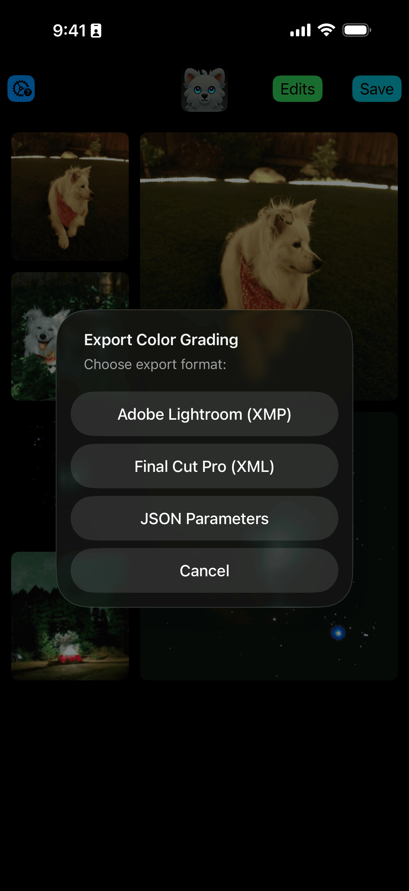
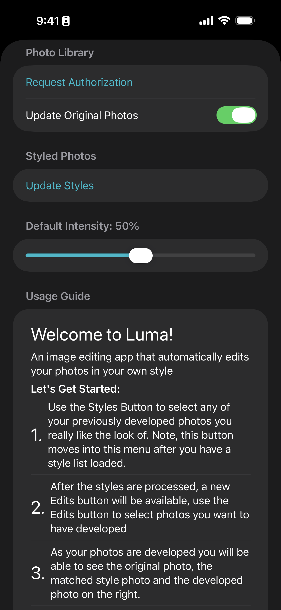

See It In Action
Screenshots
Experience Luma Editor's powerful workflow




🎨 Luma Editor
Bulk photo editing that matches your unique style. Develop new photos to look like your previous work or match another photographer's aesthetic. Create custom LUTs and apply consistent edits across your entire photo library with ease.
Why Choose Luma Editor
Develop photos that match your signature look or any style you love
Develop new photos to automatically match your previously developed photos. Maintain a consistent aesthetic across all your work effortlessly.
Learn from other photographers by matching their editing style. Perfect for understanding different aesthetics and developing your own unique look.
Apply consistent edits across multiple photos at once. Save hours of editing time while maintaining professional quality across your entire shoot.
Generate LUTs (Lookup Tables) from your edits that can be applied in other apps and software. Export your style to use across your entire workflow.
All edits can be reverted and updated anytime later. Experiment freely knowing you can always go back or refine your adjustments.
Seamlessly works with your Photos library. Edit, organize, and manage all your photos without leaving the Apple ecosystem.
Luma Editor analyzes your previously developed photos to understand your unique editing style. Apply that same aesthetic to new photos automatically, ensuring consistency across all your work.
Whether you're a professional photographer maintaining brand consistency or an enthusiast perfecting your look, Luma Editor makes it easy to achieve cohesive results every time.
Process entire photo shoots in minutes instead of hours. Apply your style to hundreds of photos while maintaining the quality and attention to detail of manual editing.
Create and save custom LUTs that can be exported and used in other photo editing software. Your style becomes portable and reusable across your entire creative workflow.
All edits are completely revertible. Change your mind about an edit from last week? No problem. Update, refine, or completely redo any edit at any time.
Learn from other photographers by matching their style, then tweak and adapt it to create your own unique look. Luma Editor is your creative playground for photographic style.
See It In Action
Experience Luma Editor's powerful workflow
Got Questions?
Luma Editor analyzes the color grading, tone curves, and other characteristics of your previously developed photos. It then applies similar adjustments to new photos, maintaining consistency with your established style or matching another photographer's aesthetic.
Yes! Luma Editor excels at bulk photo editing. Select multiple photos and apply your style to all of them at once, saving hours of manual editing while maintaining consistent quality across your entire photo shoot.
LUTs (Lookup Tables) are color grading presets that can be applied to photos and videos. Luma Editor lets you create custom LUTs from your edits and export them for use in other apps like Adobe Lightroom, Premiere Pro, Final Cut Pro, and more.
No! All edits in Luma Editor are non-destructive and fully revertible. You can update, refine, or completely undo any edit at any time. Your original photos are never modified.
Absolutely! This is a great way to learn from photographers you admire. Luma Editor can analyze any photo and apply similar color grading and tone adjustments to your own work, helping you understand different editing styles and develop your own aesthetic.
Yes! Luma Editor integrates seamlessly with Apple Photos. All your edits, albums, and organization stay within the Apple ecosystem, making it easy to manage your entire photo workflow in one place.